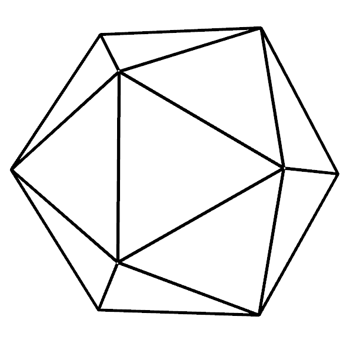

| No. | Year | Location, Country | Proceedings | Post-Proceedings | Special issues |
|---|---|---|---|---|---|
| 14. | 2023 mirror | Belgrade, Serbia | EPTCS 398 | AMAI S804 | |
| 13. | 2021 mirror | Hagenberg, Austria (online) | EPTCS 352 | AMAI 91(6) | |
| 12. | 2018 mirror | Nanning, China | Proceedings | MCS 14(4) | |
| 11. | 2016 WBM mirror | Strasbourg, France | Proceedings | AMAI 85(2-4) | |
| 10. | 2014 | Coimbra, Portugal | Proceedings | LNAI 9201 | |
| 9. | 2012 WBM mirror | Edinburgh, UK | Proceedings | LNAI 7993 | |
| 8. | 2010 | Munich, Germany | Proceedings | LNAI 6877 | |
| 7. | 2008 mirror | Shanghai, China | LNAI 6301 | ||
| 6. | 2006 | Pontevedra, Spain | LNAI 4869 | ||
| 5. | 2004 | Gainesville, USA | LNAI 3763 | ||
| 4. | 2002 mirror | Hagenberg, Austria | LNAI 2930 | ||
| 3. | 2000 WBM mirror | Zurich, Switzerland | LNAI 2061 | ||
| 2. | 1998 WBM mirror | Beijing, China | LNAI 1669 | ||
| 1. | 1996 WBM mirror | Toulouse, France | LNAI 1360 |
|  |
ADG Foundation (Arbeitskreis zur Automatisierten Deduktion in der Geometrie) A-4020 Linz, Salesianumweg 3 |